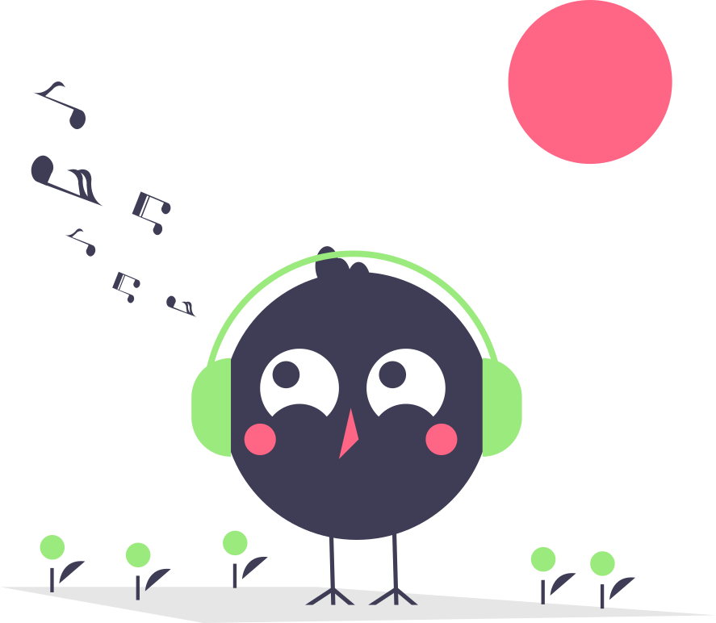

<ion-header [translucent]="true">
  <ion-toolbar>
    <ion-title>
      IChat
    </ion-title>
  </ion-toolbar>
</ion-header>

<ion-content [fullscreen]="true">
  <div id="home-container">
    <div class="home-content">

      <!--Header de boas-vindas-->
      <div class="home-header">
        <div class="home-header-content">
          <h1>Olá Jonatas!</h1>
          <p>Bem-vindo ao IChat</p>
        </div>
      </div>

      <div class="home-wrapper">
        <!--Essa tag só aparecerá caso não existam contatos adicionados-->
        <div *ngIf="!contacts" class="empty-contacts">
          
          <h3>Você ainda não possui contatos!</h3>
          <button class="btn-add-contact">Adicionar contato</button>
        </div>

        <!--Quando tiver contatos cadastrados eles apareceram aqui-->
        <div class="contact-card" *ngFor="let contact of contacts" routerLink="/message/{{contact.id}}">
          <div class="contact-profile"></div>
          <h3>{{contact.contact_name}}</h3>
          <button class="btn-delete" (click)="deleteContact(contact.id)">
            <ion-icon name="trash"></ion-icon>
          </button>
        </div>
      </div>
    </div>

    <!--Botão para adicionar contatos-->
    <div class="btn-register-contact">
      <ion-icon name="add" (click)="openAddModal()"></ion-icon>
    </div>
  </div>
</ion-content>
